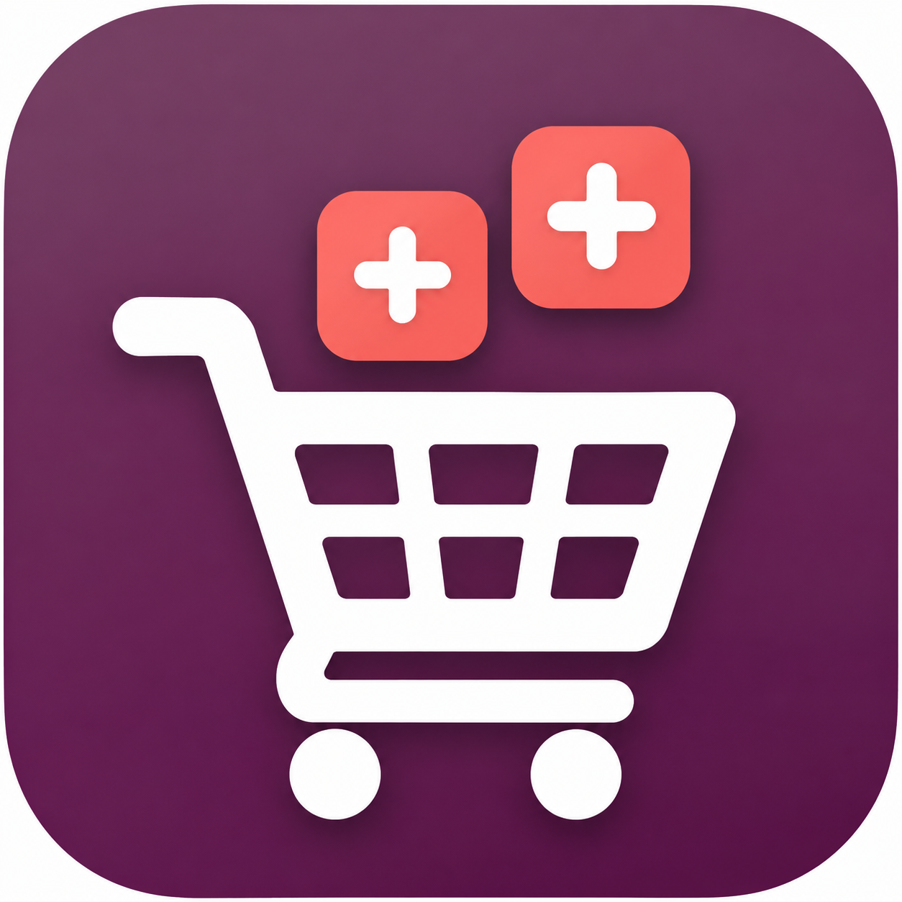
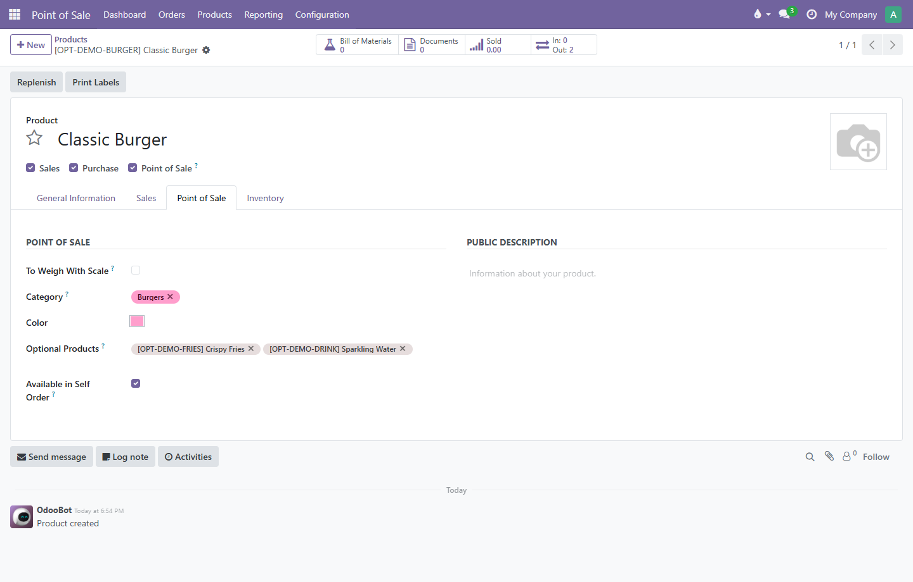
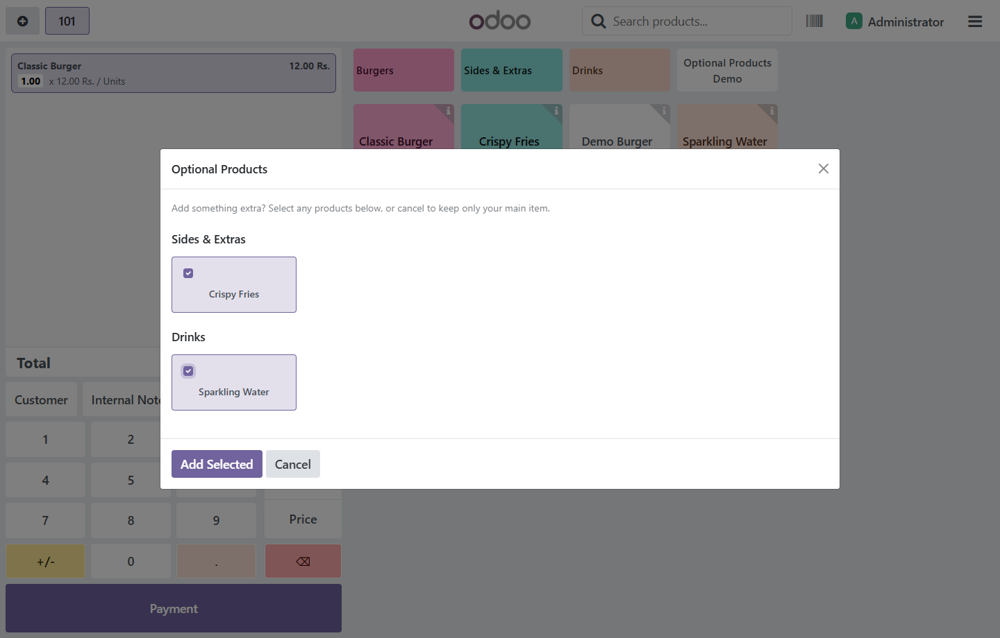
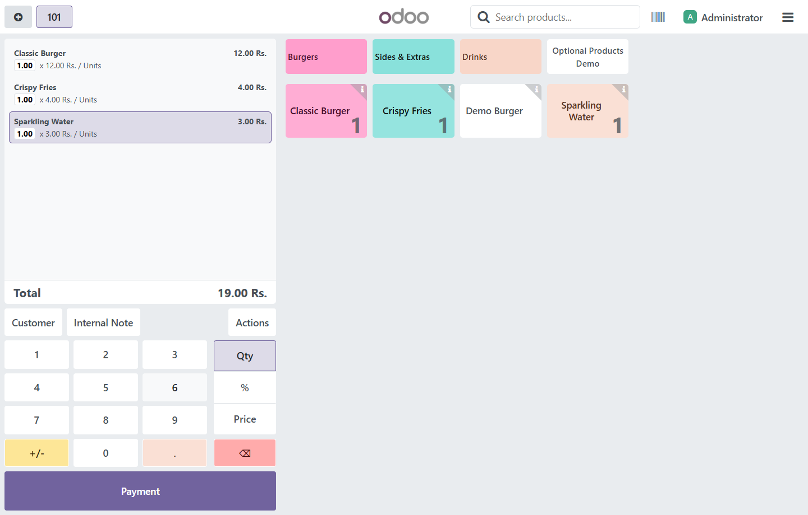

SUGGEST THE EXTRAS. KEEP CHECKOUT SIMPLE.
Offer the right extras when a product enters the cart. Let cashiers select drinks, sides, accessories, or other suggestions in one clear popup.
Odoo 18 Point of Sale Open source · LGPL-3
Choose the suggestions on the product's POS tab.
Pick any combination, or skip the suggestions.
Extras become normal items in the cart.
SEE THE WORKFLOW
A burger, fries, and sparkling water demonstrate the flow in the running Odoo 18 application. These screenshots use sample records; demo products are not included with the addon.
01 / CONFIGURE YOUR SUGGESTIONS
Open the product's Point of Sale tab and select Crispy Fries and Sparkling Water in Optional Products. Save, then reopen the POS to load the updated suggestions.

02 / OFFER THE RIGHT EXTRAS
Adding the burger opens its optional products, grouped by POS category. Select one or several extras and click Add Selected. Cancel or close the popup to keep the main item without extras.

03 / CONTINUE CHECKOUT
The burger, fries, and water appear as normal order items at their standard POS prices. Each selected extra is added with quantity one. Cashiers can then adjust quantities or continue to payment as usual.

Configure different extras for every main product. Product IDs determine the suggestions, so products sharing a name keep their own selections.
Suggestions use their first POS category and follow category sequence. Products without a category appear under Other Products.
Select several extras, select none, or cancel. The main product is already in the cart and stays there when suggestions are skipped.
Extras selected in the popup do not open their own optional-products popup. Standard product configuration can still appear when needed.
Opening the popup needs no separate server request. Suggestions load with the POS and respect its company and allowed category restrictions.
Built for Odoo 18 with Point of Sale as its only direct dependency. No external connector or additional third-party addon is required.
They are ordinary POS products with standard pricing and taxes. The addon suggests items; it does not create a combo or apply a promotion.
Previously added extras remain independent cart items. Adjust or remove them separately. Identical items may merge according to standard Odoo behavior.
The configuration belongs to the product template and is shared across its variants. Each optional template appears once, and standard POS product configuration handles its attributes when required.
Check that it is active, sellable, available in POS, and allowed by the POS company and category settings. Reopen the POS after changing suggestions.
POS Optional Products · Odoo 18 · LGPL-3
By Talha Khan — Odoo Developer & Technical Consultant